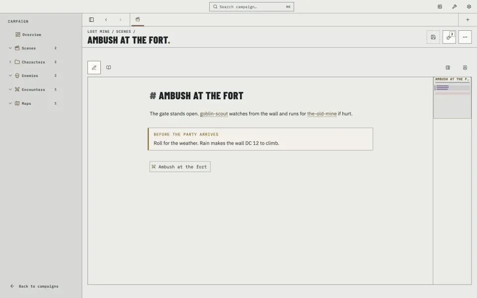
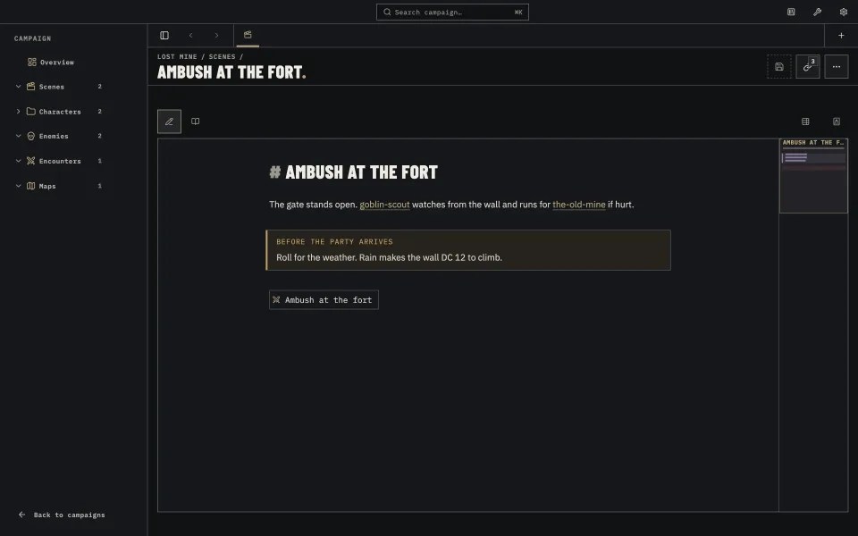
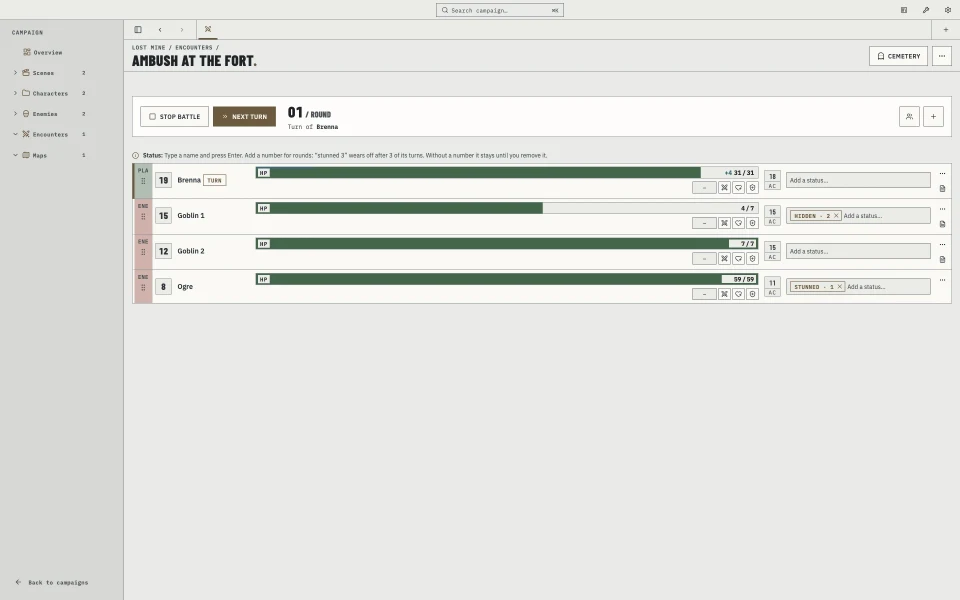
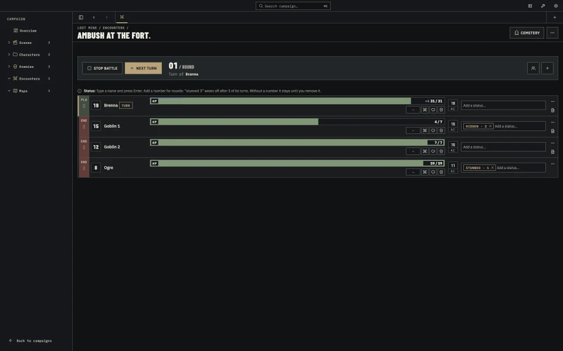
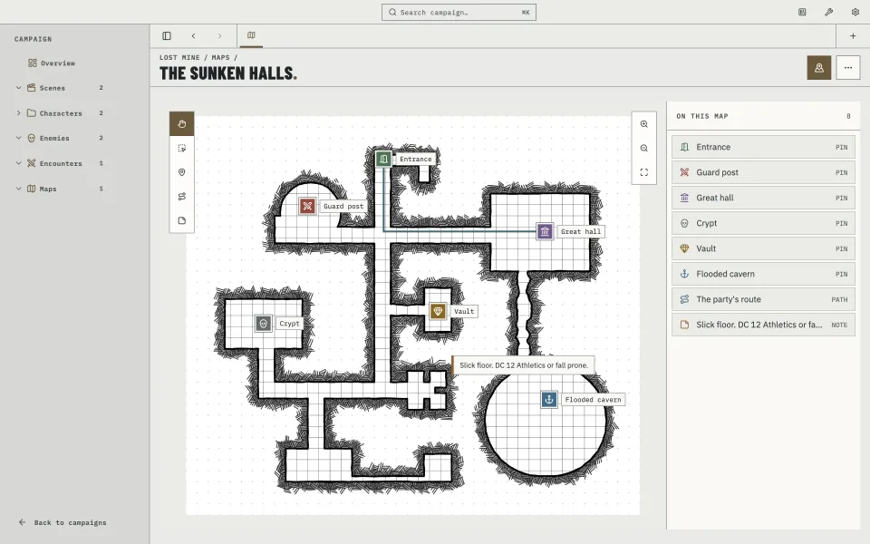
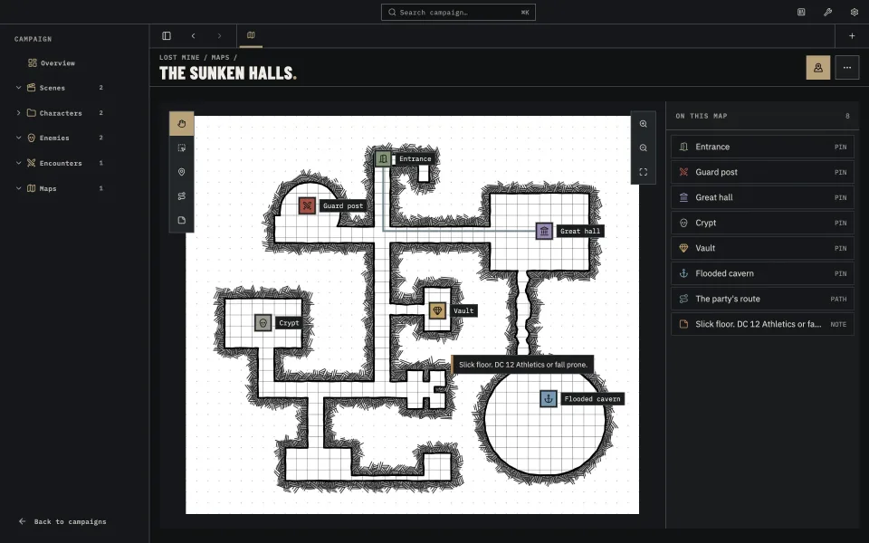
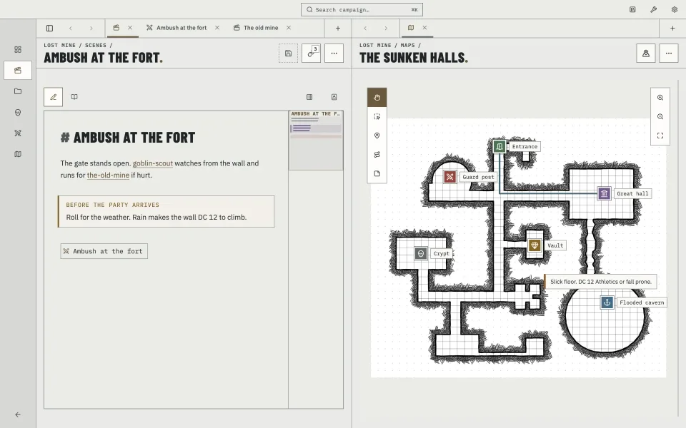
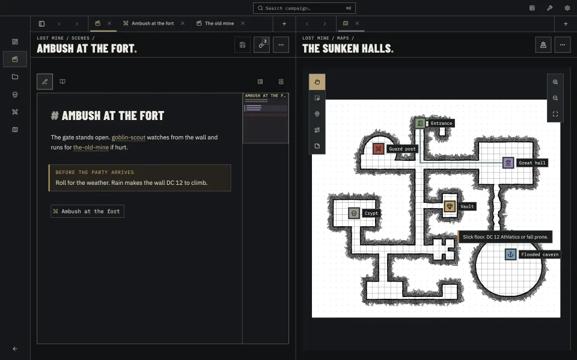

Properties
- title
- LazyDM
- for
- Dungeon Masters
- runs on
- macOS, Windows, Linux
- status
- pre-1.0
LazyDM
Prep the campaign. Run at the table.
LazyDM is a desktop campaign manager and encounter tracker for Dungeon Masters. Prepare notes in plain Markdown, then keep the right scene, map and Combatants open while you run the session.
LazyDM is heading toward 1.0 and is not available to download yet.
The whole campaign, close at hand
Your Codex keeps notes, encounters, maps, images, audio and PDFs in one campaign folder. Every Markdown note remains yours and works in other editors, including Obsidian. LazyDM can rebuild its local search and link index from those files.
- One campaign
- Notes, maps and encounters stay together from preparation through play.
- Lazy by design
- Sensible defaults keep preparation moving and table tools close.
- Your folder
- Move the folder, back it up or open its notes in any Markdown editor.
- Built from your files
- Search and links use a local index that LazyDM can rebuild from the Codex.
Prepare at your desk
Write scenes, characters and enemies as notes, then connect them with [[links]]. When you rename a
note, LazyDM updates every link to it. Before the session, Review finds broken links that need attention.
- Templates follow the campaign’s game system, with ready-made fields for D&D 5e and Pathfinder 2e.
- Links shows what points to the open note and where that note leads next.
- Compendium keeps shared material ready to copy into any campaign.
- Assets bring images, audio and PDFs into your notes.


Run at the table
Add Combatants from their stat-block notes or the party roster, roll initiative and advance through the turns. LazyDM reads hit points, defences and other details from each linked note, so the Tracker starts with the stat block you already prepared.
Set the campaign to Generic, D&D 5e or Pathfinder 2e and the Tracker layout follows. Show rows as Compact, Card or Expanded. Change any value for this fight without changing its linked note. The battle bar keeps the round and active turn in view, while the cemetery holds defeated Combatants until you recover them.


Open the right place
Add a map image and place pins for the locations that matter. Link a pin to a note, and the guard post on the map opens the guard post you prepared earlier.


Keep the scene together
Open any note, map or encounter beside another, with separate tabs on each side. Keep the scene and its map together while you prepare, then put the map beside the encounter when play begins.


Bring the Codex with you
Keep the Codex on your computer or put it in an iCloud, Dropbox, OneDrive, Box or Google Drive folder. Your cloud app handles the sync; LazyDM waits for files still downloading and warns you about conflicting copies.
Connect a local AI assistant when you want one
Enable the local MCP server to give an AI assistant on the same computer access to your Codex. The server stays off until you switch it on.
Follow LazyDM to 1.0
LazyDM is still in development. Follow the project on GitHub to see each release take shape.
Questions before you follow
What is LazyDM?
LazyDM is a desktop campaign manager and encounter tracker for Dungeon Masters. It keeps campaign preparation and the tools used during play in one app.
Does LazyDM work with Obsidian?
Yes. Campaign notes are plain Markdown in a folder you own, so they remain compatible with Obsidian and other Markdown editors.
Where does LazyDM store campaign files?
Your campaign lives in a folder called a Codex. LazyDM builds a local search and link index from those files and can rebuild it when needed.
Which game systems does LazyDM support?
LazyDM includes Tracker layouts and note templates for Generic campaigns, D&D 5e and Pathfinder 2e.
How does campaign sync work?
Put the Codex in an iCloud, Dropbox, OneDrive, Box or Google Drive folder. Your cloud app handles synchronization while LazyDM handles placeholder downloads and warns about conflicting copies.
Is LazyDM available to download?
Not yet. LazyDM is heading toward version 1.0. Follow the GitHub project to track development and future releases.
Can an AI assistant access a Codex?
Yes, when you enable the optional local MCP server. It lets an AI assistant on the same computer access the Codex and stays off until you switch it on.